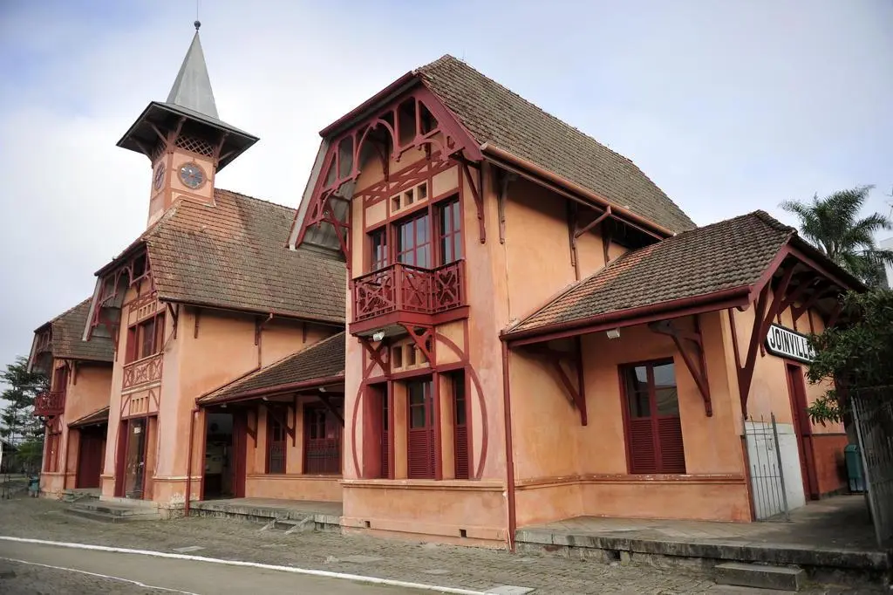

Baía Babitonga
A Babitonga é a maior baía navegável do Estado de Santa Catarina, com 24 ilhas, na qual é possível passear de balsa para contemplar a paisagem que esse lugar maravilhoso oferece.
Os turistas também podem apreciar um passeio de barco que passa por 14 ilhas e aproveitar a parada de 1h30 no Centro Histórico de São Francisco do Sul.
Estação da Memória
O edifício que abriga um dos pontos mais visitados da cidade foi construído em 1906 e funcionou como estação ferroviária de Joinville. O prédio foi tombado pelo Iphan (Instituto do Patrimônio Histórico e Artístico Nacional) em 2008, tornando-se patrimônio arquitetônico brasileiro.
O prédio da estação esteve totalmente abandonado, servindo como moradia de mendigos, traficantes, pombos e cupins por muito anos, mas foi restaurada em 2007 mantendo todos os detalhes da época que foi construída.

Além da arquitetura que chama a atenção dos turistas, contando a história do local através dos trilhos e dos objetos de época, o local conta ainda com um auditório para a exibição de filmes, bares, cafeterias, lojas e área de exposição, o Museu do Ferro de Passar e ao seu lado, o armazém de cargas, construído em 1947, abriga o Museu da Bicicleta.
Localização: Rua Leite Ribeiro, s/nº (antiga Estação Ferroviária) - Anita Garibaldi - Joinville - SC
Horário de visitação: terça a domingo, 10h às 16h
Para mais informações: (47) 3422-5222 | estacao@joinville.sc.gov.br
Entrada: gratuita
Estrada Bonita
A estrada bonita foi fundada em 1885 por imigrantes que trabalhavam na construção da estrada de ferro de Paranaguá e vieram para a região instalar linhas de telégrafo. As famílias vivem até hoje no local, preservando a cultura da época.
O ponto turístico está localizado no Distrito Pirabeiraba, às margens da BR-101 e atrai turistas que buscam apreciar belezas naturais ou conhecer um pouco mais a região que lembra um vale de colonizadores alemães, principalmente por sua arquitetura característica e seus produtos coloniais.
Também é possível passear por algumas propriedades, tomar banho nas águas que descem as montanhas e visitar o museu rural.
Endereço: Estrada Bonita, Rio Bonito - Pirabeiraba
Horário de funcionamento: Sempre aberto
Para mais informações: (47) 3646-1271 | estradabonita.com.br
Mirante
A estrutura encontra-se no ponto mais alto do Morro da Boa Vista, na região central de Joinville. Com quase 250 metros de altura, é possível visualizar quase todos os bairros da cidade e ainda apreciar a linda paisagem da Baía da Babitonga.
Quem visita o local ainda pode percorrer uma trilha em meio a Mata Atlântica.
Endereço: R. Pastor Guilherme Rau – Saguaçu
Horários: Diariamente, das 7h às 19h
Entrada: Gratuita
Museu Arqueológico do Sambaqui
É considerado referência em preservação do patrimônio arqueológico brasileiro e na produção de conhecimentos sobre povos construtores de sambaquis, que viveram na região a mais de 5 mil anos.
O museu foi criado em 1969, mas o prédio que hoje é sede do museu foi inaugurado em 1972 com cerca de 45 mil artefatos que evidenciam a cultura e o estilo de vida do povo sambaquiano.
Entre as peças estão ossos dos indivíduos, pontas de flechas esculpidas em quartzo, animais esculpidos em pedras, utensílios e ferramentas de fibras vegetais trançadas a mais de 3 mil anos.
Localização: Rua Dona Francisca, 600 - Centro - Joinville - SC
Horário aberto ao público: terça a domingo, 10h às 16h
Para mais informações: (47) 3433-0114 | sambaqui.adm@gmail.com
Entrada: gratuita
Museu da Imigração e Colonização
O museu guarda objetos e documentos relacionados ao processo histórico de imigração e colonização do sul do país. O prédio foi projetado em 1870 para servir como administração da Colônia Dona Francisca e foi tombado pelo Iphan em 1939.
O local é dividido em quatro espaços de exposição:
O Casarão principal, antiga residência e sede da Colônia Dona Francisca foi construído em 1870. Com mais de 850 m², o prédio conta com exposições nos três pisos, onde o visitante pode conferir um pouco da arquitetura e decoração utilizados na época.
O Galpão de Tecnologia Patrimonial foi construído em 1963 e possui aproximadamente 280 m². Apresenta maquinários de trabalho dos imigrantes germânicos e também dos luso-brasileiros e açorianos que viviam na região de Joinville.
O Galpão de Transportes foi construído em 2006, possui mais de 250 m² contém vários meios de transporte usados na região. Conta com carroças usadas na segunda metade do século XIX e outras que circularam até a década de 1970.
O último espaço pertence a administração, antigo escritório do representante dos Príncipes e, mais tarde, dos Procuradores de seus herdeiros. Contém área de 66 m² e foi inaugurado em 1907.
.jpg)
Localização: Rua Rio Branco, 229 - Centro - 89201-080, Joinville - SC
Para mais informações: (47) 3422-2154 | arquivohistorico@joinville.sc.gov.br
Entrada: gratuita.
Parque Zoobotânico
Anexo ao mirante, o parque foi inaugurado em 1995 após uma reivindicação dos moradores e conta com uma área de 17 mil m².
O parque traz a fauna e a flora da Mata atlântica e atualmente estão no local mais de 200 animais de espécies diferentes, além de conter uma área para recreação infantil, trilhas, quiosques e auditório para eventos.
Horário: de terça a domingo, das 9 às 18 horas
Endereço: Rua Pastor Guilherme Rau, 462 – Saguaçu
Mais informações: (47) 3431-5016
.jpg)
.jpg)
.jpg)
.jpg)
.jpg)